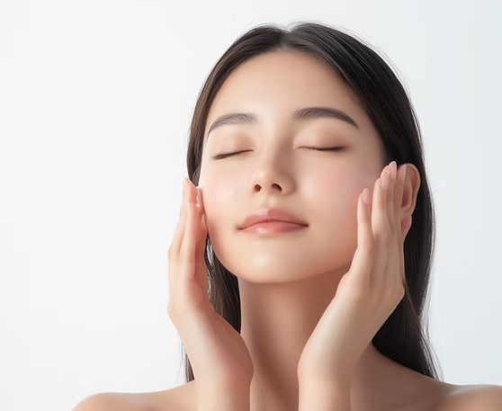
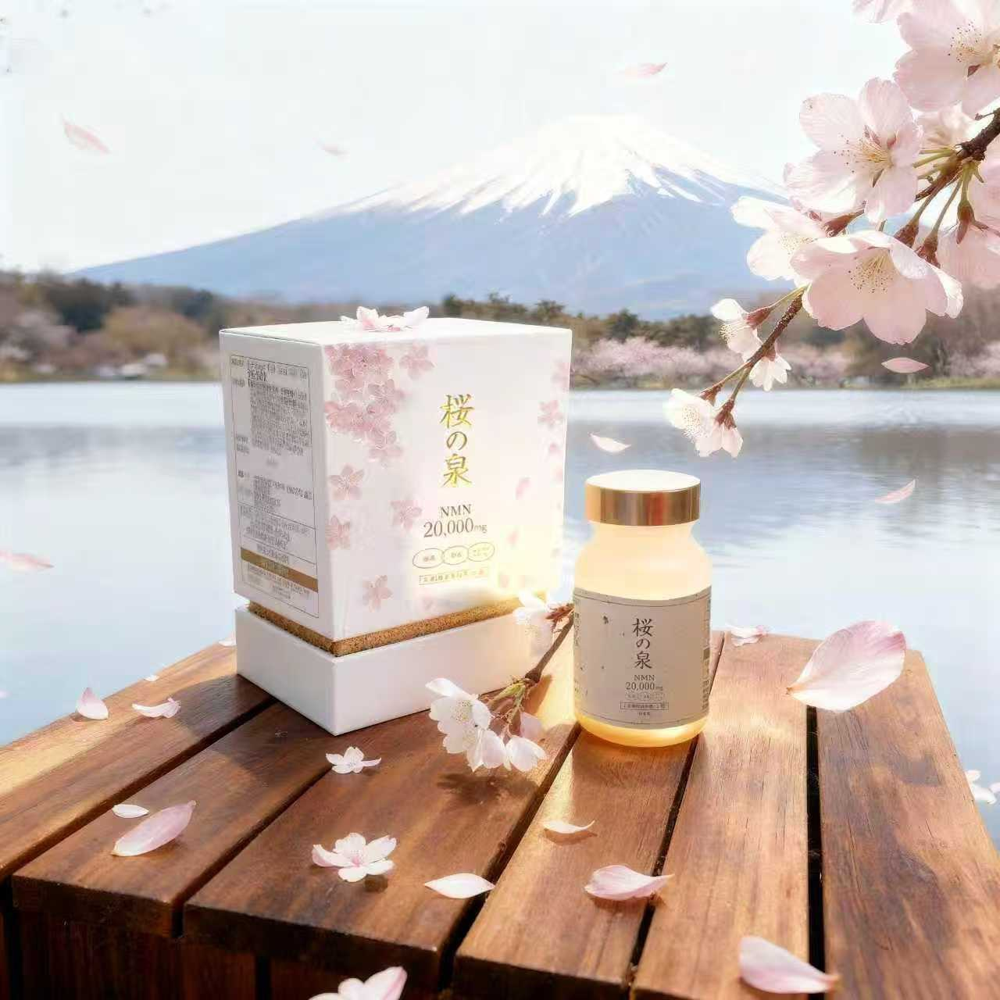
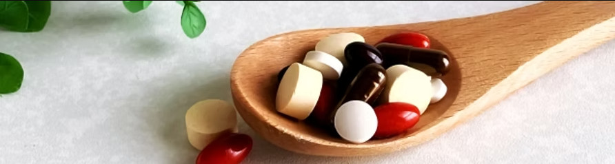

市場で珍しい配合バランス
日本のNMN市場は競合が多い一方で、NMN＋PQQ＋水素＋抗酸化群までをひとつにまとめた製品は限定的です。細胞エネルギー、細胞の守り、抗酸化、美容の視点を包括的に設計しています。
桜の泉 NMN＋水素＋PQQ
NMN・PQQ・水素に加え、抗酸化成分を体系的に配合した「総合抗老化型」のプレミアムサプリメントです。
※効果には個人差があります。初回限定のお得なご案内をご用意しています。

年齢とともに変化を感じやすいサインに、内側から向き合うために
桜の泉は、細胞エネルギー（NMN・PQQ）と抗酸化・美容を支える成分群を組み合わせ、ライフスタイル全体をトータルで見据えた設計にしています。
体内で減少しやすいNAD⁺（ニコチンアミドアデニンジヌクレオチド）を支える前駆体
NMN（ニコチンアミド・モノヌクレオチド）は、私たちの体内にも存在する成分で、細胞内エネルギーの要であるNAD⁺をつくるための「材料」となる分子です。
NAD⁺は、細胞のエネルギー産生（ATP）やDNAの修復、代謝の調整、加齢に伴い注目される各種の生命活動に深く関わる、いわば細胞の司令塔に近い存在です。
※ヒトを対象とした十分な長期試験はいまだ進行中であり、実感には個人差があります。本製品は医薬品ではなく、疾病の治療や予防を目的としたものではありません。

「NMN単体」では届きにくい領域まで、設計段階からひとつのフォーミュラにまとめました
| 成分 | 配合量（目安） | ポイント |
|---|---|---|
| NMN | 20,000mg／瓶 | 高配合で市場の上位帯。NAD⁺サポートの中核 |
| PQQ | 600mg／瓶 | ミトコンドリアの働きに着目した配合 |
| 水素（サンゴCa由来） | — | 36時間持続。溶存量データに基づく設計 |
| 赤ワインエキス（レスベラトロール） | 配合 | 抗酸化と美容領域をサポート |
| ビタミンE | 配合 | 抗酸化の基本成分 |
| α-リポ酸 | 配合 | 血流・代謝の観点から後押し |
| コエンザイムQ10 | 配合 | エネルギー産生の補助として配合 |
| カプセル | 耐酸性 | 胃酸にさらされにくく、成分をお届けしやすい形状 |
NMNに加え、代謝・抗酸化・細胞エネルギーまでを一枚の処方でカバーするのが、桜の泉のコンセプトです。
日本のNMN市場は競合が多い一方で、NMN＋PQQ＋水素＋抗酸化群までをひとつにまとめた製品は限定的です。細胞エネルギー、細胞の守り、抗酸化、美容の視点を包括的に設計しています。
水素は医療・研究の両面で注目が高まっています。抗酸化、代謝、疲労感、脳の健康など、多面的な報告があります。本品は36時間持続、沖縄産サンゴカルシウム由来、溶存量データを軸に、再現性と説明責任を意識した配合です。

数字に表れない「使い続けたくなる納得感」まで込めて
ボトル換算の高配合
1瓶あたりNMNを20,000mg配合。純度と安定性に配慮し、日常のエイジングケアの土台として摂取しやすい設計です。NAD⁺を介したエネルギー代謝のサポートを念頭に置いています。
持続と溶存にこだわる
焼成サンゴカルシウム由来の水素パウダーを採用。ナノサイズの水素が体内で長く働くよう設計され、抗酸化・代謝の観点からトータルバランスを整えます。
ミトコンドリアに光を当てる
「第3のビタミン」とも呼ばれるPQQを600mg配合。ミトコンドリアの新生やエネルギー産生の効率化が研究で示唆されており、NMNとの相乗効果を意識した組み合わせです。
レスベラトロールをはじめ、すこやかな毎日を彩るサポート成分
ポリフェノールの一種であるレスベラトロールを含み、生活習慣や紫外線などによる酸化ストレスに配慮。ハリ感のある印象へ導く美容サポートとして位置づけています。
脂溶性ビタミンとして、細胞膜の酸化を防ぐ役割が知られています。抗酸化設計のベースラインとして配合しました。
水溶・脂溶の両方に溶ける性質を持ち、血流や糖代謝の健全性を支える成分として広く利用されています。
体内でつくられる量が加齢とともに減少しやすい補酵素。ミトコンドリアでのATP産生を助け、活力ある毎日を後押しします。
単一成分型と比較したときの、桜の泉の立ち位置
| 項目 | 桜の泉 NMN＋水素＋PQQ | 一般的なNMN商品（目安） |
|---|---|---|
| NMN配合量（瓶） | 20,000mg | 3,000〜10,000mg程度が多い |
| 併用成分 | 水素＋PQQ＋抗酸化6種 | ほぼNMNのみのものが多い |
| ミトコンドリア | ◎（NMN＋PQQ） | △ |
| 抗酸化 | ◎（水素＋レスベラ＋E＋Q10 など） | △ |
| 美容領域 | ○ | △〜× |
| エネルギー領域 | ◎ | △ |
| 研究・開発背景 | 自社研究・産学連携 | 明記が少ない商品も多い |
| 品質証明 | GMP＋国際基準の品質管理 | 記載なしが散見される |
| 科学的根拠 | 複数成分で裏付けを設計 | NMN単体の訴求に留まることが多い |
| 安全性の情報 | パッケージ・資料で明示 | 表記にばらつき |
| コンセプト | 総合抗老化型 | 単一成分型が主流 |
※一般的な商品との比較は市場調査に基づく目安であり、すべての競合を保証するものではありません。
実際にご愛用いただいている方々からのご感想です
「50歳を過ぎてから、朝の身体の重さが気になっていました。桜の泉を試して2週間ほどで、起き上がりが軽やかになったような気がして、今では朝の散歩が日課になりました。」
「これまでいくつかNMNを飲んできましたが、配合量の多さに加えて水素やPQQまで入っている点に惹かれました。肌の触り心地が変わってきた気がして、リピート購入を決めました。」
「仕事の集中が続くようになったと感じています。夕方まで頭がぼんやりしにくくなったのは、生活を見直したこともありますが、サプリの一本化で続けやすくなったのは大きいです。」
ご購入前によくお寄せいただく内容をまとめました
NMNは体内にも存在する成分です。本品は健康食品として、法令にのっとった製造・品質管理のもとでお届けしています。治療中の方や妊娠・授乳中の方は、事前に医師へご相談ください。
1日1〜2カプセルを目安に、水またはぬるま湯でお召し上がりください。お身体の状態に合わせて、無理のない範囲で調整してください。
個人差があります。多くの方が2週間〜1か月程度で何らかの変化を感じられるとの声をいただいています。継続的なご利用と、規則正しい生活をあわせることをおすすめします。
多くの場合は併用いただけますが、処方薬を服用中の方、通院中の方は医師または薬剤師にご相談ください。
直射日光、高温多湿を避け、涼しい場所で保管してください。開封後はチャックをしっかり閉め、お早めにお召し上がりください。
特に上限・下限は設けていませんが、30代以降、すこやかな加齢を意識し始めた方に選ばれています。
本品は溶存量データに基づき、設計段階から再現性を重視しています。詳細な試験データは製品同梱の資料またはお問い合わせ窓口にてご確認ください。
桜の泉 NMN＋水素＋PQQ 初回限定価格
通常価格
¥32,000
初回限定
¥24,800（税込）
23%OFF
※お一人様3個まで ※本ページはデモ構成です。決済連携時はボタン先をご指定ください。